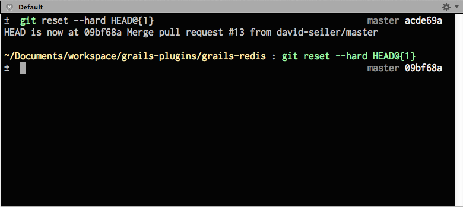

Git Core Concepts
or: how I learned to stop worrying and love the reflog
by Ted Naleid
Presentation: tednaleid.github.com/showoff-git-core-concepts
| z, ? | toggle help (this) |
| space, → | next slide |
| shift-space, ← | previous slide |
| d | toggle debug mode |
| ## <ret> | go to slide # |
| c, t | table of contents (vi) |
| f | toggle footer |
| r | reload slides |
| n | toggle notes |
| p | run preshow |
rewriting history is a lie
git commits are immutable and cannot be “rewritten”
you only add to history
garbage collection removes unwanted commits weeks later
____
\ \__ ____
\ \/_______\___\_________
\/_/ o o o o o o o o o `-..
`-----------/~~~~/----------'
/____/
__.-^^---....,,-,
_-- \--_
( ^)
( )
\._ _./
``---\ ! ! , /---''
| | |
.--| ! ! |--.
`==#######=='
| ! !|
,-#########~,._
git doesn't help by having a terrible user interface
git mislabels things in confusing ways
git has hundreds of commands, but commonly used ones require extra parameters
git uses dangerous-sounding terms:
“rewrite history”
rebase
reset --hard HEAD
squash
fast-forward
reflog
throw away your preconceptions from other version control systems
git is a DAG (directed acyclic graph)
E---F---G
/
A---B---C---D-----------K---L---M
\ /
H---I---J
DAG nodes each represent a commit
E---F---G
/
A---B---C---D-----------K---L---M
\ /
H---I---J
A commit is identified by a unique SHA
% cat .git/refs/heads/master f643986c985998abd74076afe0247c81e0399512 % git cat-file -p f643986 tree 392739b5a3de25773c163ae91191d3360811d302 parent 94381141d087e9354b34ae76d2ab064a39b1cc69 author Ted Naleid <contact@naleid.com> 1343694118 -0500 committer Ted Naleid <contact@naleid.com> 1343698088 -0500 adding _amazing_ ascii art
commits are completely immutable and are impossible to accidentally destroy with git commands
rm -rf yourrepo and lose anything not yet pushed out
uncommitted work is easily destroyed, so commit early & often
you cannot modify commits, only add new ones
garbage collection is the only truly destructive git action
garbage collection only destroys commits with nothing pointing at them
child commits
tags
branches
the reflog
point at 1..N parent commits
E---F---G
/
A---B---C---D
fixed pointers
A---B---C
↑
release_1.0
% git commit -m "adding stuff to C"
A---B---C---D
↑
release_1.0
floating pointers that move on commit
A---B
↑
master
% git commit -m "adding stuff to B"
A---B---C
↑
master
they're just pointers, and are easy to move if you don't like where they are at
A---B---C
↑
master
% git reset --hard SHA_OF_B
A---B---C
↑
master
C still exists and was not harmed by moving the pointer
reset in a bit
“remote” branches are just pointers in your local repo
origin/master
↓
A---B---C---D---E
↑
master
fetch or pull
just text files in .git/refs/heads (local) and .git/refs/remotes (remote)
% ls -1 .git/refs/heads/**/* .git/refs/heads/master .git/refs/heads/my_feature_branch
% ls -1 .git/refs/remotes/**/* .git/refs/remotes/origin/HEAD .git/refs/remotes/origin/master .git/refs/remotes/origin/my_feature_branch
branch text file contains is the SHA of the commit it's pointing at
% cat .git/refs/heads/master 0981e8c8ffbd3a1277dda1173fb6f5cbf4750d51
% git cat-file -p 0981e8c8ffbd3a1277dda1173fb6f5cbf4750d51 tree 4fd7894316b4659ef3f53426166697858d51a291 parent e324971ecf1e0f626d4ba8b0adfc22465091c100 parent d33700dde6d38b051ba240ee97d685afdaf07515 author Ted Naleid <contact@naleid.com> 1328567163 -0800 committer Ted Naleid <contact@naleid.com> 1328567163 -0800 merge commit of two branches
commits don't “belong to” branches, there's nothing in the commit metadata about branches
a branch's commits are implied by the ancestry of the commit the branch points at
feature
↓
E---F---G
/
A---B---C---D
↑
master
master is A-B-C-D and feature is A-B-E-F-G
HEAD is the active commit that will be the parent of the next commit
% cat .git/HEAD ref: refs/heads/master
a log of recent HEAD movement
% git reflog
d72efc4 HEAD@{0}: commit: adding bar.txt
6435f38 HEAD@{1}: commit (initial): adding foo.txt
% git commit -m "adding baz.txt"
% git reflog
b5416cb HEAD@{0}: commit: adding baz.txt
d72efc4 HEAD@{1}: commit: adding bar.txt
6435f38 HEAD@{2}: commit (initial): adding foo.txt
unique to a repository instance
a garbage collected commit can still exist in a clone
if the only thing pointing to a commit is the reflog, it's “dangling”
A---B---C---D---E---F
↑
master
% git reset --hard SHA_OF_B
A---B---C---D---E---F
↑
master
C..F are now dangling
but they will be safe for ~2 weeks because of the reflog
HEAD@{1}
↓
A---B---C---D---E---F
↑
master (also HEAD@{0})
HEAD@{1} will become HEAD@{2}..HEAD@{N} as refs are added to the reflog
once a dangling commit leaves the reflog, it is “loose” and is at risk of garbage collection
git does a gc when the number of “loose” objects hits a threshold
to prevent garbage collecting a commit, just point something at it
% git tag mytag SHA_OF_DANGLING_COMMIT
you should have courage to experiment
you have weeks to retrieve prior commits if something doesn't work
a pre-commit staging area
git add . puts all changes in the index ready for commit
git commit -a -m "msg"
HEAD & the current branch to the specified <SHA>
A---B---C---D---E
↑
master
git reset --soft SHA_OF_C
working dir & index still look like
↓
A---B---C---D---E
↑
master
useful for squashing the last few messy commits into one pristine commit
working dir & index still look like
↓
A---B---C---D---E
↑
master
git commit -m "perfect code on the 'first' try"
A---B---C---E'
↑
master
git reset [--mixed] <SHA>
HEAD & the current branch to the specified <SHA><SHA>git reset HEAD will unstage everything in the index
git reset --hard <SHA>
HEAD & the current branch to the specified <SHA><SHA><SHA>git reset --hard HEAD
reset, see: http://progit.org/2011/07/11/reset.html
redo the last commit
A---B---C
↑
master+HEAD
<... change some files ... > git commit --amend -m "New commit message"
master+HEAD
↓
C'
/
A---B---C
↑
(dangling but still in reflog)
C!
master+HEAD
↓
C'
/
A---B---C
↑
(dangling)
git reflog # find SHA_OF_C git reset --hard SHA_OF_C
(dangling)
↓
C'
/
A---B---C
↑
master+HEAD
reapplies a series of commits to a new parent commit
then moves the current branch pointer
feature+HEAD
↓
E---F---G
/
A---B---C---D
↑
master
git rebase master
(dangling but still in reflog)
↓
E---F---G
/
A---B---C---D---E'--F'--G'
↑ ↑
master feature+HEAD
a private activity, should never be done with commits that have been pushed
rebasing public commits is bad because it creates redundant commits with new SHAs
if you want to clean things up, an alternative is to create another branch, rebase onto that and push it out
compresses N commits into one commit that's appended to a destination branch
feature
↓
E---F---G
/
A---B---C---D
↑
master+HEAD
git merge --squash feature
feature
↓
E---F---G
/
A---B---C---D---G'
↑
master+HEAD
E..F is unimportant
apply a subset of changes from another branch
E---F---G
/
A---B---C---D
↑
master+HEAD
git cherry-pick SHA_OF_F
E---F---G
/
A---B---C---D---F'
↑
master+HEAD
download new commits and update the remote branch pointer
does not move any local references
A---B---E---F
(origin) ↑
master (local ref in remote repo)
origin/master
↓
(local) A---B---C---D
↑
master+HEAD
% git fetch
origin/master
↓
E---F
/
(local) A---B---C---D
↑
master+HEAD
pull is fetch plus merge
A---B---E---F
(origin) ↑
master (local ref in remote repo)
origin/master
↓
(local) A---B---C---D
↑
master+HEAD
% git pull
origin/master
↓
E---F----
/ \
(local) A---B---C---D---G
↑
master+HEAD
the "right" way to pull down changes from the server
stash any uncommitted changes (if any)fetch the latest refs and commits from originrebase -p your changes (if any) onto origin's headstash any previously stashed changes
fetch + rebase avoids unnecessary commits
Luckily, git smart-pull (part of the git-smart ruby gem) does all this for us
gem install git-smart
Costs $ but totally worth it

[alias] # nice one liner for status st = status --short # remove files from index unstage = reset HEAD
~/.gitconfig
[alias]
# pretty ascii graph log format
l = log --graph --pretty='%Cred%h%Creset -%C(yellow)%d%Creset\
%s %Cblue[%an]%Creset %Cgreen(%cr)%Creset'\
--abbrev-commit --date=relative
# pretty log with all branches
la = !git l --all
# show just commits currently decorated by branch/tag pointers
# really useful for high level picture
ld = !git l --all --simplify-by-decoration
~/.gitconfig
[alias]
# all commits unreachable via branch, tag, or child commit
# ignores anything pointed to by the reflog
# so it displays all commits in jeopardy of garbage collection
loose-commits = !"for SHA in $(git fsck --unreachable\
--no-reflogs | grep commit |\
cut -d\\ -f 3); do git log -n 1 $SHA; done"
~/.gitconfig
OSX only…watches file system for changes & auto updates ascii graph log
gem install omglog